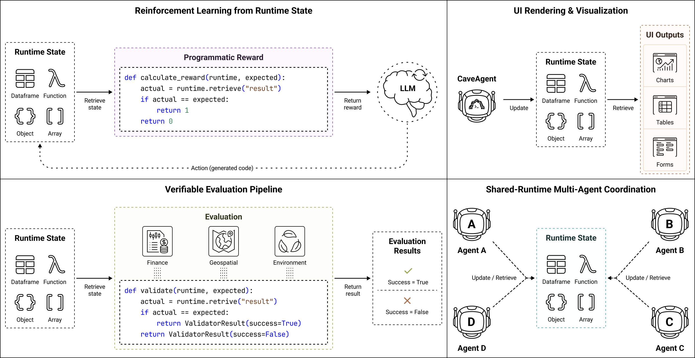
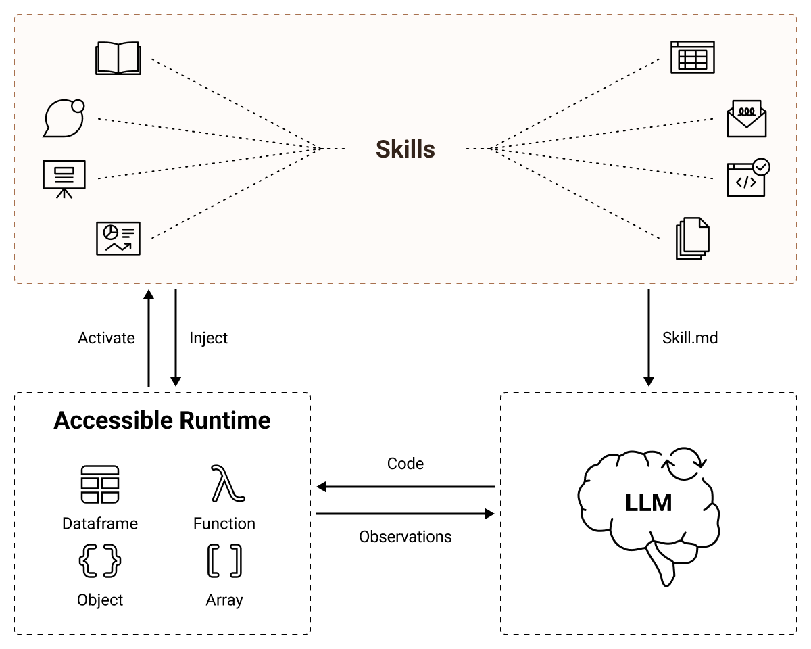
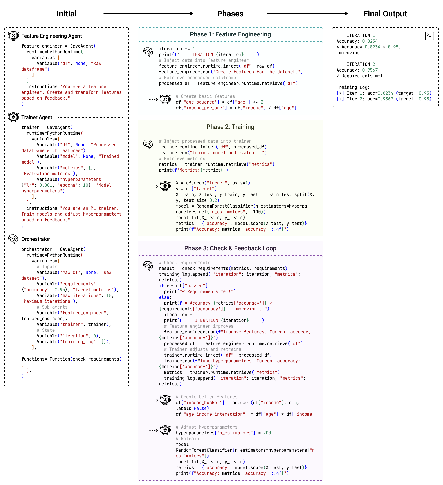
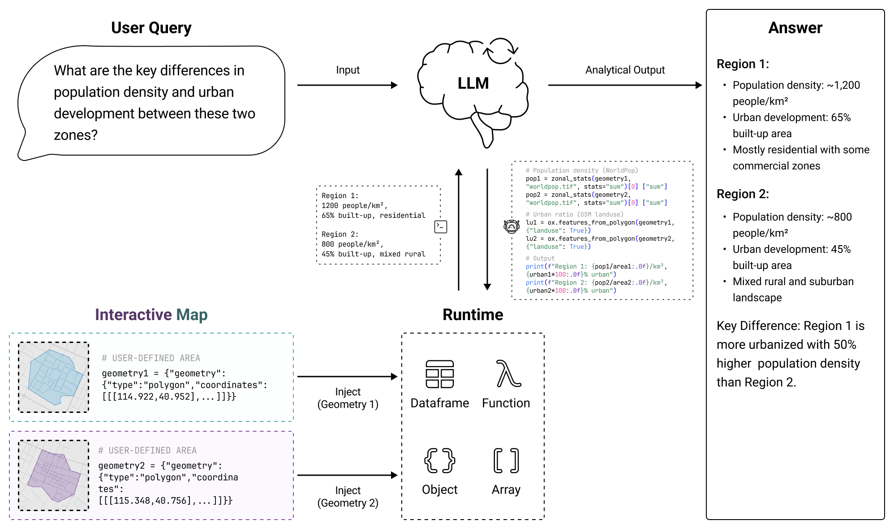

LLM-based agents are increasingly capable of complex task execution, yet current agentic systems remain constrained by text-centric paradigms that struggle with long-horizon tasks due to fragile multi-turn dependencies and context drift. We present CaveAgent, a framework that shifts LLM tool use from "LLM-as-Text-Generator" to "LLM-as-Runtime-Operator." CaveAgent introduces a dual-stream architecture: a semantic stream for lightweight reasoning and a runtime stream backed by a persistent Python environment for stateful execution.
Rather than treating the LLM's text context as the primary workspace, CaveAgent elevates the persistent runtime as the central locus. Beyond leveraging code generation to resolve interdependent sub-tasks in a single step, CaveAgent introduces Stateful Runtime Management: it injects, manipulates, and retrieves complex Python objects (e.g., DataFrames, database connections) that persist across turns. CaveAgent further provides a runtime-integrated skill management system that extends the Agent Skills open standard.
Evaluations on Tau2-bench and BFCL across six SOTA LLMs demonstrate consistent improvements: +10.5% success rate on retail tasks, 28.4% reduction in total token consumption, and 59% token reduction on data-intensive tasks. The accessible runtime state further provides programmatically verifiable feedback, enabling automated evaluation and reward signal generation for Reinforcement Learning with Verifiable Rewards (RLVR).
Click each step or press "Play All" to see the dual-stream architecture in action.
Reasoning & Intent
Press "Play All" or click a step to begin...
Persistent State & Data
Waiting for initialization...
Click each turn to see how CaveAgent maintains persistent state across interactions.
Thermostat
18°C
Door
Locked
Lights
Off
Camera
Off





Performance on Tau2-bench (Retail domain) across 6 SOTA LLMs. CaveAgent achieves +10.5% average success rate improvement.
| Model | Baseline SR | CaveAgent SR | Improvement |
|---|---|---|---|
| GPT-4o | 31.0% | 37.0% | +6.0% |
| Claude 3.5 Sonnet | 28.5% | 40.5% | +12.0% |
| Gemini 2.0 Flash | 21.5% | 31.5% | +10.0% |
| Gemini 2.5 Pro | 38.5% | 46.5% | +8.0% |
| DeepSeek-V3 | 20.5% | 33.5% | +13.0% |
| Qwen 2.5 72B | 19.0% | 33.0% | +14.0% |
SR = Success Rate. Full results including Airline domain available in the paper.
pip install 'cave-agent[all]'import asyncio
from cave_agent import CaveAgent
from cave_agent.runtime import PythonRuntime, Variable, Function
from cave_agent.models import LiteLLMModel
model = LiteLLMModel(
model_id="model-id",
api_key="your-api-key",
custom_llm_provider="openai"
)
async def main():
def reverse(s: str) -> str:
"""Reverse a string"""
return s[::-1]
runtime = PythonRuntime(
variables=[
Variable("secret", "!dlrow ,olleH", "A reversed message"),
Variable("greeting", "", "Store the reversed message"),
],
functions=[Function(reverse)],
)
agent = CaveAgent(model, runtime=runtime)
response = await agent.run("Reverse the secret")
print(runtime.retrieve("greeting")) # Hello, world!
asyncio.run(main())@article{ran2026caveagent,
title={CaveAgent: Transforming LLMs into Stateful Runtime Operators},
author={Ran, Maohao and Wan, Zhenglin and Lin, Cooper and Zhang, Yanting and others},
journal={arXiv preprint arXiv:2601.01569},
year={2026}
}